External authentication
HTTP
LDAP / AD
SAML
Integrating Security Assertion Markup Language (SAML) for authentication within Zabbix presents a non-trivial configuration challenge. This process necessitates meticulous management of cryptographic certificates and the precise definition of attribute filters. Furthermore, the official Zabbix documentation, while comprehensive, can initially appear terse.
Initial Configuration: Certificate Generation
The foundational step in SAML integration involves the generation of a private key
and a corresponding X.509 certificate. These cryptographic assets are critical
for establishing a secure trust relationship between Zabbix and the Identity Provider
(IdP).
By default, Zabbix expects these files to reside within the ui/conf/certs/
directory. However, for environments requiring customized storage locations, the
zabbix.conf.php configuration file allows for the specification of alternative
paths.
Let,s create our private key and certificate file.
bash
cd /usr/share/zabbix/ui/conf/certs/
openssl req -newkey rsa:2048 -nodes -keyout sp.key -x509 -days 365 -out sp.crt
Following the generation and placement of the Zabbix Service Provider (SP) certificates, the next critical phase involves configuring the Identity Provider (IdP). In this context, we will focus on Google Workspace as the IdP.
Retrieving the IdP Certificate (idp.crt) from Google Workspace:
- Access the Google Workspace Admin Console: Log in to your Google Workspace administrator account.
- Navigate to Applications: Within the admin console, locate and select the "Apps" section.
- Access Web and Mobile Apps: Choose
Web and mobile appsfrom the available options. -
Create a New Application: Initiate the creation of a new application to facilitate SAML integration. This action will trigger Google Workspace to generate the necessary IdP certificate.
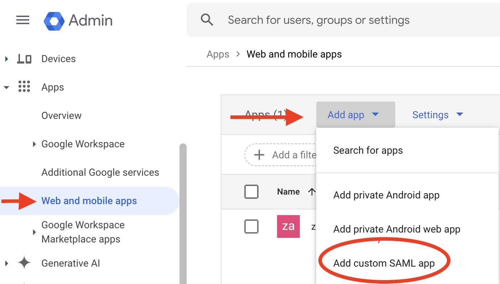
-
Download the IdP Certificate: Within the newly created application's settings, locate and download the idp.crt file. This certificate is crucial for establishing trust between Zabbix and Google Workspace.
- Placement of idp.crt: Copy the downloaded
idp.crtfile to the same directory as the SP certificates in Zabbix, underui/conf/certs/.
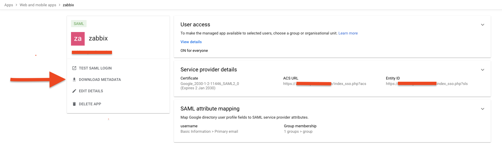
SAML Attribute Mapping and Group Authorization
A key aspect of SAML configuration is the mapping of attributes between Google Workspace and Zabbix. This mapping defines how user information is transferred and interpreted.
Attribute Mapping:
- It is strongly recommended to map the Google Workspace "Primary Email" attribute to the Zabbix "Username" field. This ensures seamless user login using their Google Workspace email addresses.
- Furthermore, mapping relevant Google Workspace group attributes allows for granular control over Zabbix user access. For instance, specific Google Workspace groups can be authorized to access particular Zabbix resources or functionalities.
Group Authorization:
- Within the Google Workspace application settings, define the groups that are authorized to utilize SAML authentication with Zabbix.
- This configuration enables the administrator to control which users can use SAML to log into Zabbix.
- In Zabbix, you will also need to create matching user groups and configure the authentication to use those groups.
Configuration Example (Conceptual):
- Google Workspace Attribute: "Primary Email" -> Zabbix Attribute: "Username"
- Google Workspace Attribute: "Group Membership" -> Zabbix Attribute: "User Group"
This attribute mapping ensures that users can log in using their familiar Google Workspace credentials and that their access privileges within Zabbix are determined by their Google Workspace group memberships.
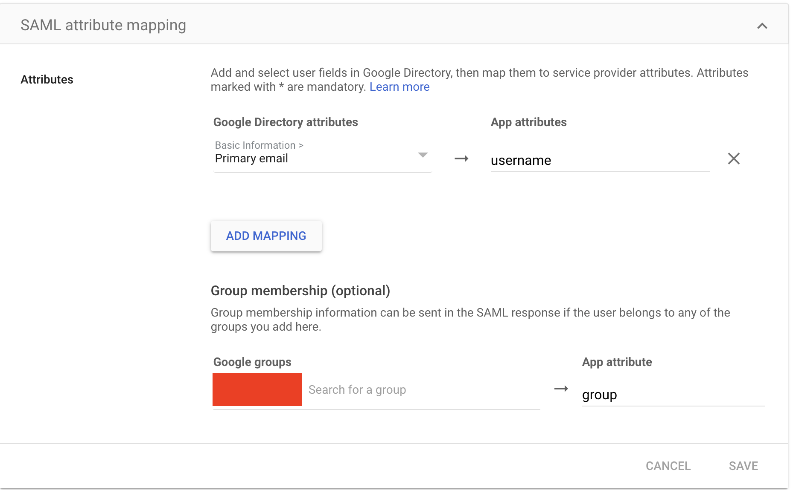
Zabbix SAML Configuration
With the IdP certificate and attribute mappings established within Google Workspace, the final step involves configuring Zabbix to complete the SAML integration.
Accessing SAML Settings in Zabbix:
- Navigate to User Management: Log in to the Zabbix web interface as an administrator.
- Access Authentication Settings: Go to "Users" -> "Authentication" in the left-hand menu.
- Select SAML Settings: Choose the "SAML settings" tab.
Configuring SAML Parameters:
Within the "SAML settings" tab, the following parameters must be configured:
- IdP Entity ID: This value uniquely identifies the Identity Provider (Google Workspace in this case). It can be retrieved from the Google Workspace SAML configuration metadata.
- SSO Service URL: This URL specifies the endpoint where Zabbix should send authentication requests to Google Workspace. This URL is also found within the Google Workspace SAML configuration metadata.
- Retrieving Metadata: To obtain the IdP entity ID and SSO service URL, within
the Google Workspace SAML application configuration, select the option to
Download metadata.This XML file contains the necessary values. - Username Attribute: Set this to "username." This specifies the attribute within the SAML assertion that Zabbix should use to identify the user.
- SP Entity ID: This value uniquely identifies the Zabbix Service Provider. It should be a URL or URI that matches the Zabbix server's hostname.
- Sign: Select
Assertions. This configures Zabbix to require that the SAML assertions from Google Workspace are digitally signed, ensuring their integrity.
Example Configuration (Conceptual)
- IdP entity ID: https://accounts.google.com/o/saml2?idpid=your_idp_id
- SSO service URL: https://accounts.google.com/o/saml2/idp/SSO?idpid=your_idp_id&SAMLRequest=your_request
- Username attribute: username
- SP entity ID: https://your_zabbix_server/zabbix
- Sign: Assertions
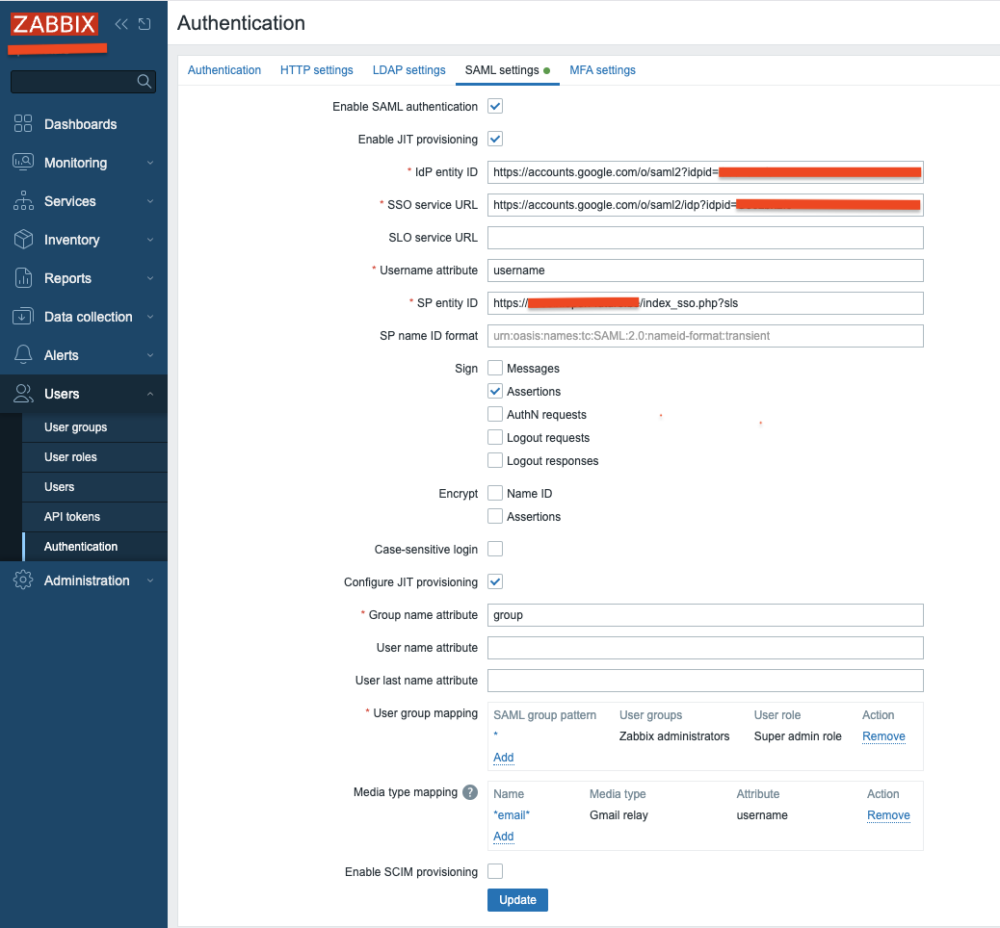
Additional Configuration Options:
The Zabbix documentation provides a comprehensive overview of additional SAML configuration options. Consult the official Zabbix documentation for advanced settings, such as attribute mapping customization, session timeouts, and error handling configurations.
Verification and Testing:
After configuring the SAML settings, it is crucial to thoroughly test the integration. Attempt to log in to Zabbix using your Google Workspace credentials. Verify that user attributes are correctly mapped and that group-based access control is functioning as expected.
Troubleshooting:
If authentication fails, review the Zabbix server logs and the Google Workspace audit logs for potential error messages. Ensure that the certificate paths are correct, the attribute mappings are accurate, and the network connectivity between Zabbix and Google Workspace is stable.
SAML Media Type mappings
After successfully configuring SAML authentication, the final step is to integrate media type mappings directly within the SAML settings. This ensures that media delivery is dynamically determined based on SAML attributes.
Mapping Media Types within SAML Configuration:
- Navigate to SAML Settings: In the Zabbix web interface, go to "Users" -> "Authentication" and select the "SAML settings" tab.
- Locate Media Mapping Section: Within the SAML settings, look for the section related to media type mapping. This section might be labeled "Media mappings" or similar.
- Add Media Mapping: Click "Add" to create a new media type mapping.
- Select Media Type: Choose the desired media type, such as "Gmail relay."
- Specify Attribute: In the attribute field, enter the SAML attribute that contains the user's email address (typically "username," aligning with the primary email attribute mapping).
- Configure Active Period : Specify the active period for this media type. This allows for time-based control of notifications.
- Configure Severity Levels: Configure the severity levels for which this media type should be used.
Example Configuration (Conceptual):
- Media Type: Gmail relay
- Attribute: username
- Active Period: 08:00-17:00 (Monday-Friday)
- Severity Levels: High, Disaster
Rationale:
By mapping media types directly within the SAML configuration, Zabbix can dynamically determine the appropriate media delivery method based on the SAML attributes received from the IdP. This eliminates the need for manual media configuration within individual user profiles when SAML authentication is in use.
Key Considerations:
- Ensure that the SAML attribute used for media mapping accurately corresponds to the user's email address.
- Verify that the chosen media type is correctly configured within Zabbix.
- Consult the Zabbix documentation for specific information about the SAML media mapping functionality, as the exact configuration options may vary depending on the Zabbix version.
Final Configuration: Frontend Configuration Adjustments
After configuring the SAML settings within the Zabbix backend and Google Workspace, the final step involves adjusting the Zabbix frontend configuration. This ensures that the frontend correctly handles SAML authentication requests.
Modifying zabbix.conf.php:
-
Locate Configuration File: Access the Zabbix frontend configuration file, typically located at /etc/zabbix/web/zabbix.conf.php.
-
Edit Configuration: Open the zabbix.conf.php file using a text editor with root or administrative privileges.
-
Configure SAML Settings: Within the file, locate or add the following configuration directives:
php
// Uncomment to override the default paths to SP private key, SP and IdP X.509 certificates, and to set extra settings.
$SSO['SP_KEY'] = 'conf/certs/sp.key';
$SSO['SP_CERT'] = 'conf/certs/sp.crt';
$SSO['IDP_CERT'] = 'conf/certs/idp.crt';
//$SSO['SETTINGS'] = [];
MS Cloud
Okta
Multi factor authentication
We all know that before you can start configuring Zabbix via WebUI you have to sign in. Zabbix has several options to provide better security for user passwords by configuring password policy:
- Requirement for Minimum password length
- Requirements for password to contain an uppercase and a lowercase Latin letter, a digit, a special character
- Requirement to avoid easy-to-guess passwords
To secure sign in process even more you can configure multi factor authentication (MFA). MFA protects Zabbix by using a second source of validation before granting access to its WebUI after a user enters his/her password correctly. Zabbix offers to types of MFA - Time-based one-time password (TOTP) and Duo MFA provider.
Time-based one-time password
In the menu select Users section and then Authentication

Now in MFA settings tab select the Enable multi-factor authentication check-box, then select TOTP in Type drop-down list.

In Hash function drop-down list you can choose SHA-1, SHA-256 or SHA-512, the higher number is the better security.
In Code lentgh you can select how many digits will be generated for you by Authenticator application on your phone.
Click Add and then Update. Now you have TOTP MFA configured and it is the default method of MFA.

Now you need to tell Zabbix for which User group (or groups) to use MFA. Let's create a User group that would require MFA.
In the menu select Users section and then User groups, then click Create user group button

In Group name put "test". Note that Multi-factor authentication field is "Default", as currently we have only one MFA method configured it does not matter whether we select "Default" or "TOTP1" that we created above. You also can disable MFA for all users belonging to this User group. Click Add button to create "test" User group.
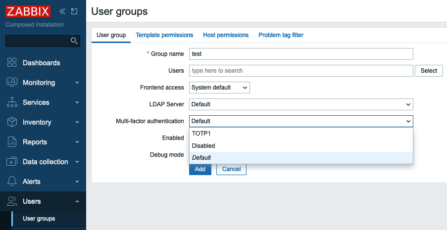
Note
MFA method is defined on per User group basis, i.e. MFA method configured for a User group will be applied to all users belonging to this group.
Let's add a user to this user group. In the menu select Users section and then Users, then click Create user button
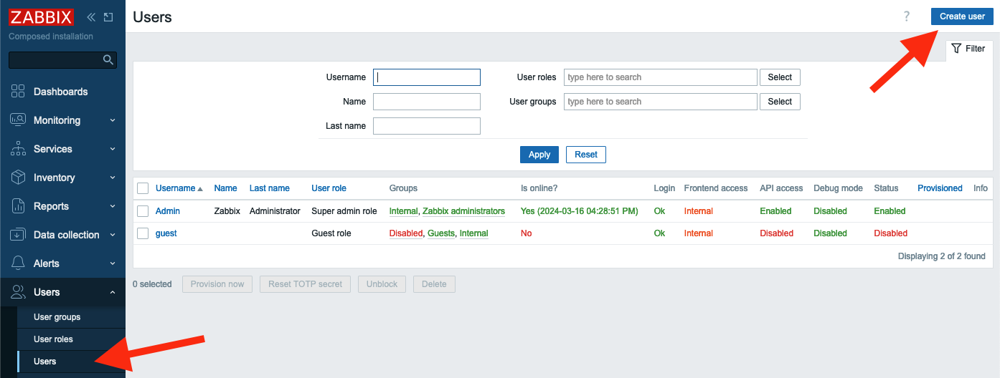
Fill in Username, Password and Password (once again) fields. Make sure you select test user group in Groups field.

Then switch to Permissions tab and select any role.

Click Add button to add the user.
Now we can test how TOTP MFA works. Sign out and then try to sign in as a test user you just created. You will be presented with a QR code. That means that the user test has not been enrolled in TOTP MFA yet.

On your phone you need to install either "Microsoft authenticator" or "Google authenticator" application. The procedure of adding new QR code is quite similar, here is how it looks in "Google authenticator". Tap Add a code and then Scan a QR code. You'll be immediately presented with a 6 digit code (remember we selected 6 in Code length when we configured TOTP MFA?)

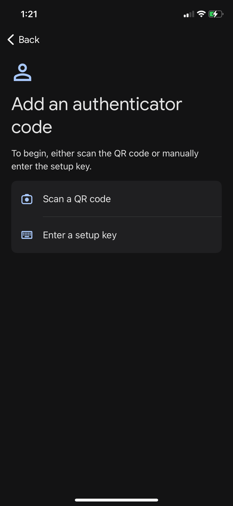

Enter this code into Verification code field of your login screen and click Sign in, if you did everything right you are logged in into Zabbix at this point. At this point the user "test" is considered enrolled into TOTP MFA and Zabbix stores a special code used for further authentications in its database. The next time user "test" tries to login into Zabbix there will be only a field to enter verification code
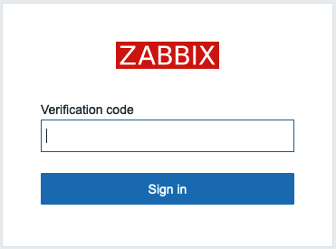
Warning
For TOTP MFA to work your Zabbix server must have correct time. Sometimes it's not the case especially if you are working with containers so pay attention to this.
If a user changes (or loses) his/her phone, then Zabbix administrator should reset his/her enrolment. To do that in the menu select Users then mark a check-box to the left of "test" user and click "Reset TOTP secret" button.
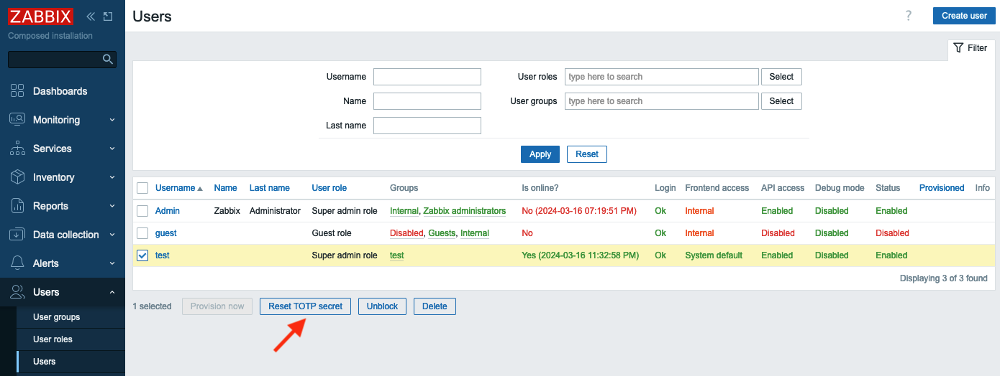
After you reset TOTP secret the "test" user will have to undergo enrolment procedure again.
Duo MFA provider
Duo is a very famous security platform that provides a lot of security related features/products. To read more please visit Duo. Here we'll talk about Duo only in regards to Zabbix MFA.
Warning
For Duo MFA to work your Zabbix WebUI must be configured to work with HTTPS (valid certificate is not required, self-signed certificate will work).
First of all you need to create an account with Duo (it's free to manage up to 10 users) then login into Duo, you are an admin here. In the menu on the left select Applications and click Protect an Application button.

Then you will see WebSDK in applications list, click on it
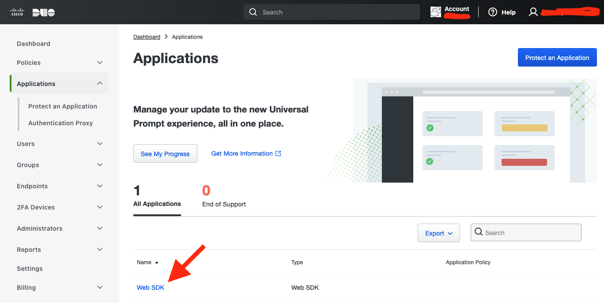
Here you'll see all the data needed for Zabbix.
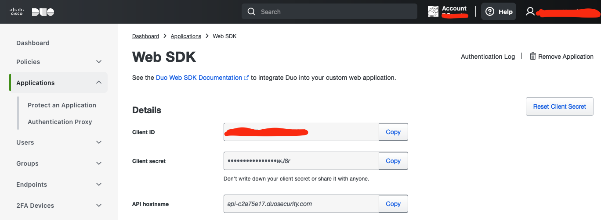
Now let's go to Zabbix. First we need to configure Duo MFA method. In the menu select Users and click Authentication. Then on MFA settings tab click Add in Methods section.

Fill in all the fields with data from Duo Dashboard -> Applications -> Web SDK page (see screenshot above) and click Add, then click Update to update Authentication settings.
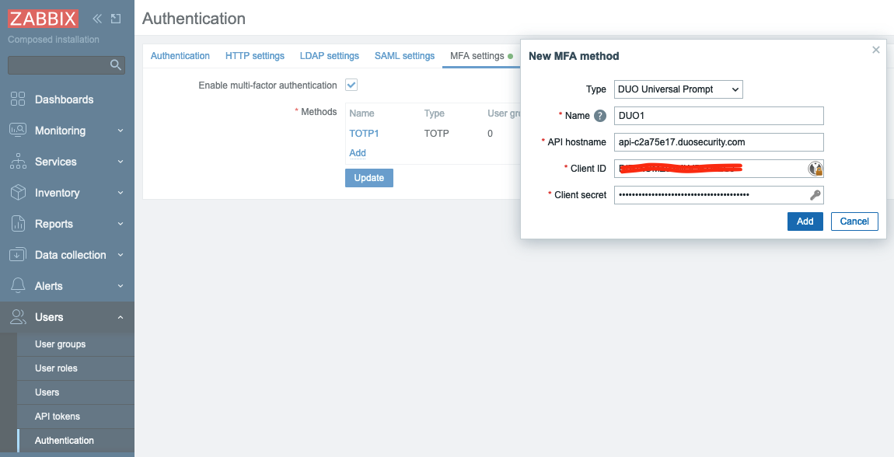
After the MFA method is configured let's switch the "Test" group to use Duo MFA. In the menu select Users and click User groups, then click "test" group. In the field Multi-factor authentication select "DUO1" and click Update.

Everything is ready. Let's test it. Sign out of Zabbix and sign back in with "test" user. You should see a welcome screen from Duo. Click several Next buttons.


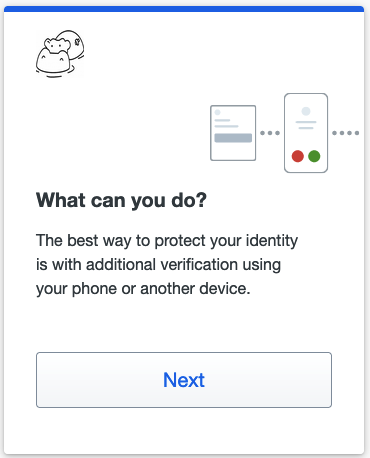
Then you need to select the method of authentication.

It is up to you what to select you can experiment with all these methods. Let's select "Duo Mobile" (you need to install "Duo mobile" application on your device). Click I have a tablet (it's just easier to activate your device this way) and confirm that you installed "Duo mobile" on your phone. At this point you should see a QR code that you need to scan in "Duo mobile" application.
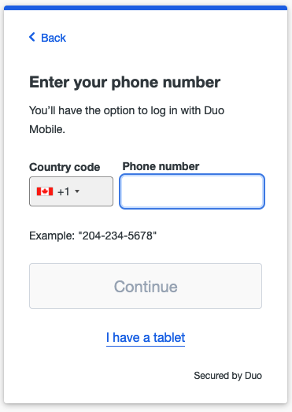
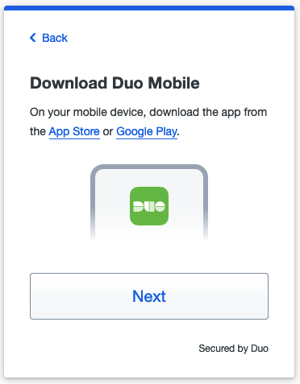

Open "Duo mobile" on your phone. If you did not have this application previously installed (thus no accounts enrolled) you will see couple of welcome screens.


Tap on "Use a QR code" and then scan the code presented by Duo in your Zabbix login screen. After you do that you will see that the account is enrolled to your Duo MFA. Enter account name and tap "Done" and you will see the account in the list of all accounts enrolled into Duo MFA on this device. In Zabbix WebUI you will also see a confirmation, click "Continue".
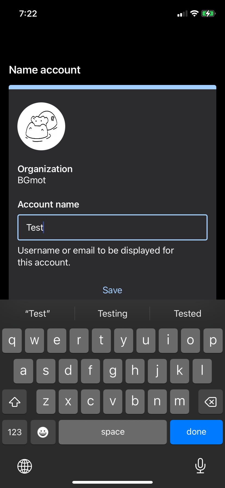
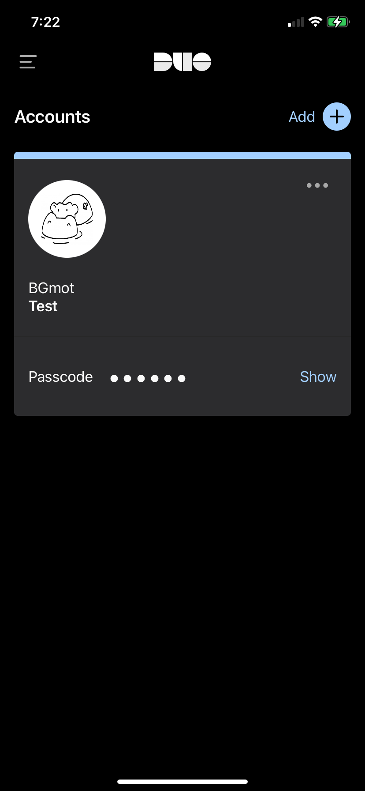

Duo will ask you now whether you want to add another method of authentication, click Skip for now and you'll see a confirmation that set up completed. Click Login with Duo and a notification will be pushed to your device.


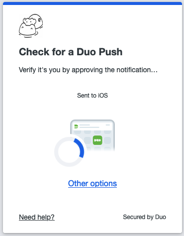
Now just tap on "Approve" on your device and you will be logged in into Zabbix.

Duo MFA enrolment complete. If you sign out and sign in back then immediately a push notification will be sent to your device and all you need is tap on "Approve". Also you will see the user "test" in Duo where you can delete the user, or deactivate just click on it and experiment.

Conclusion
In conclusion, integrating external authentication mechanisms like SAML with Zabbix significantly enhances security and streamlines user management. While the configuration process involves meticulous steps across both the Zabbix backend and frontend, as well as the external Identity Provider, the benefits are substantial. By centralizing authentication, organizations can enforce consistent access policies, simplify user onboarding and offboarding, and improve overall security posture. Ultimately, external authentication provides a robust and scalable solution for managing user access within complex Zabbix environments.